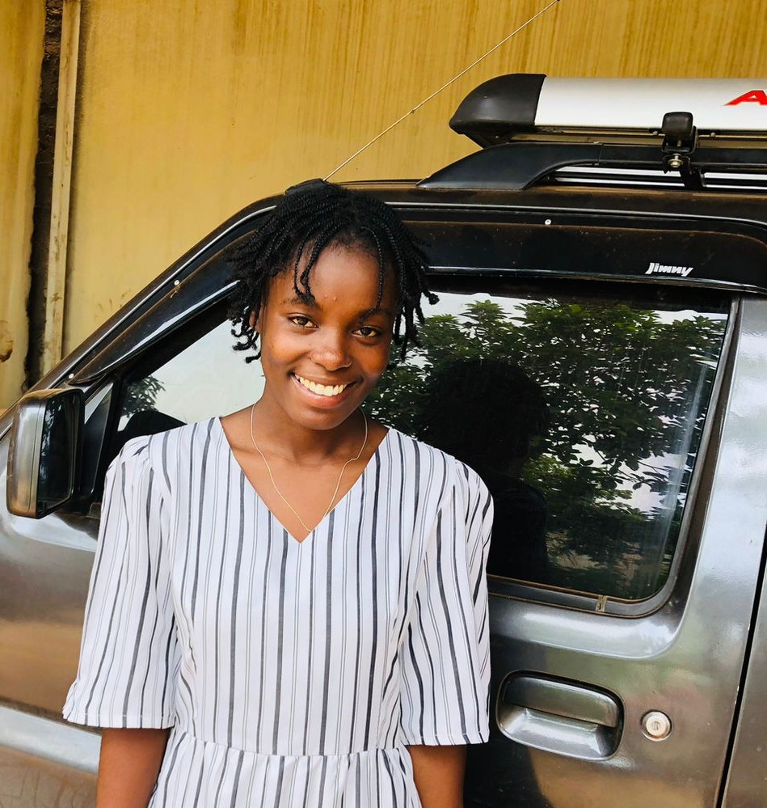

Olá! Bem-vindo à minha página. Aqui você encontrará informações sobre mim, meus projetos, habilidades e minhas redes sociais. Sinta-se à vontade para explorar e conhecer mais sobre o meu trabalho e interesses.
Nesta seção, destacarei alguns dos meus projetos mais recentes e interessantes. Fique atento para atualizações frequentes!
Conheça um pouco mais sobre as habilidades que possuo e as tecnologias que estou aprendendo. Estou sempre buscando aprender e me aprimorar.
Nas minhas redes sociais, compartilho conteúdo relacionado à programação, desenvolvimento de aplicativos e tecnologia em geral. Vamos nos conectar!